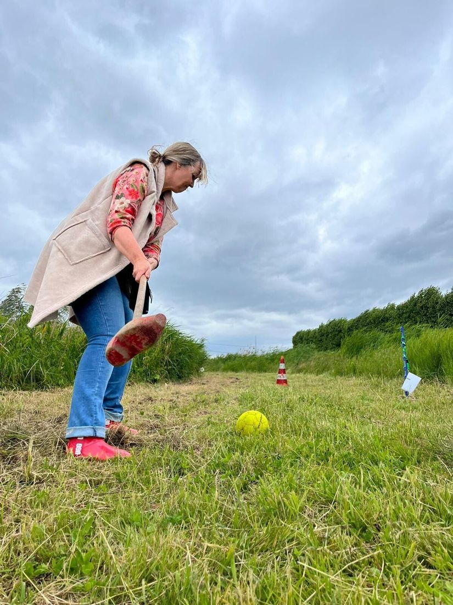
Boerengolf
10 holes door onze boomgaard, met een stok met houten klomp.
€ 7,50 p.p.Meer info
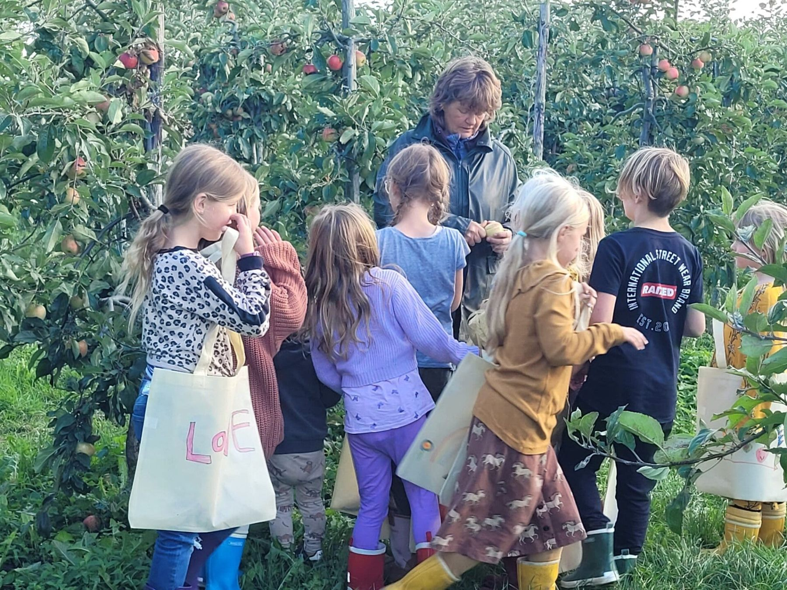
Een boerderijwinkel, zelf appels en peren plukken en de leukste uitjes dichtbij, op onze boerderij in Mijnsheerenland in de Hoeksche Waard.
Boodschappen doen, fruit plukken of er een dag op uit met familie, collega's of de klas. Het kan allemaal op de boerderij.
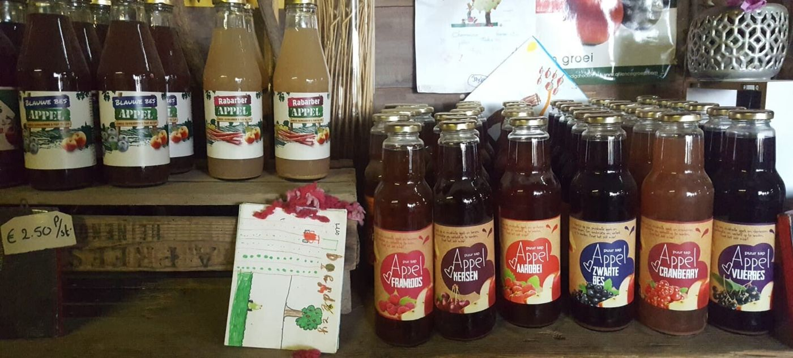
Vers, puur en zoveel mogelijk van eigen land.
Bekijk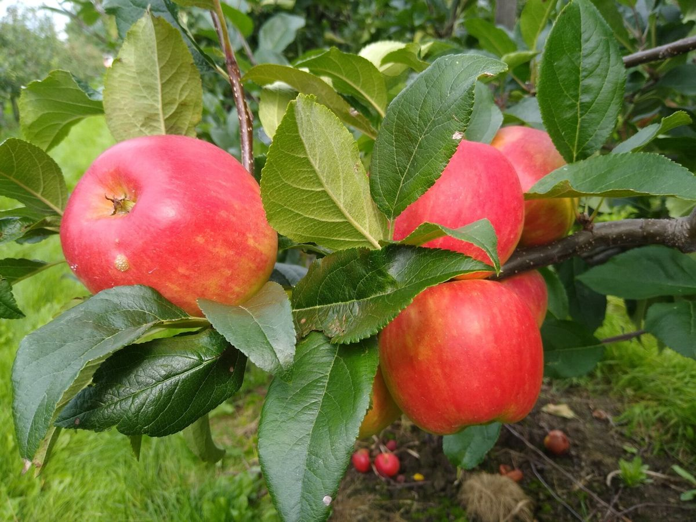
Appels en stoofperen uit onze eigen boomgaard.
Bekijk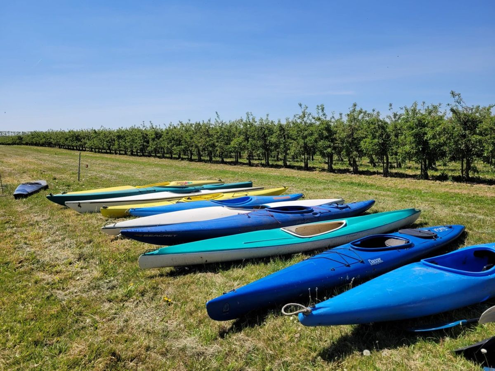
Voor familie, collega's, vrienden en scholen.
Bekijk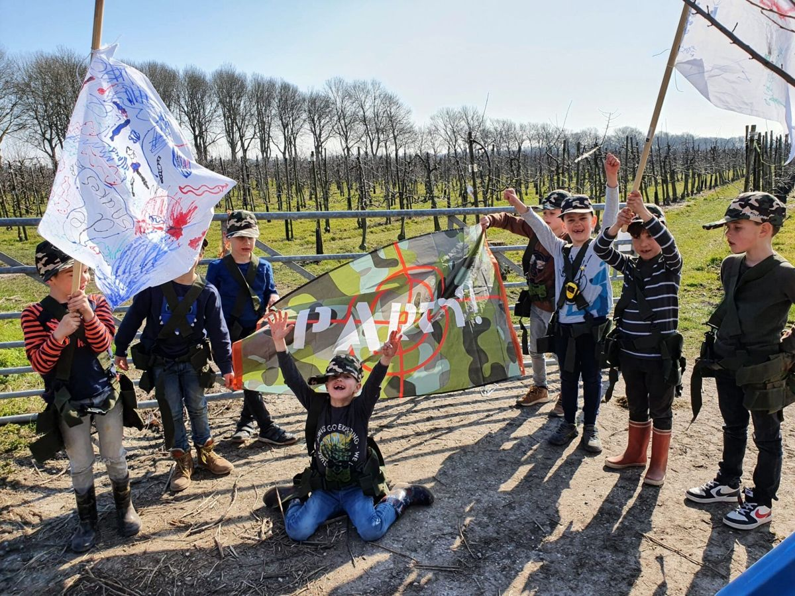
Lekker buiten spelen en niet bang zijn om vies te worden.
Bekijk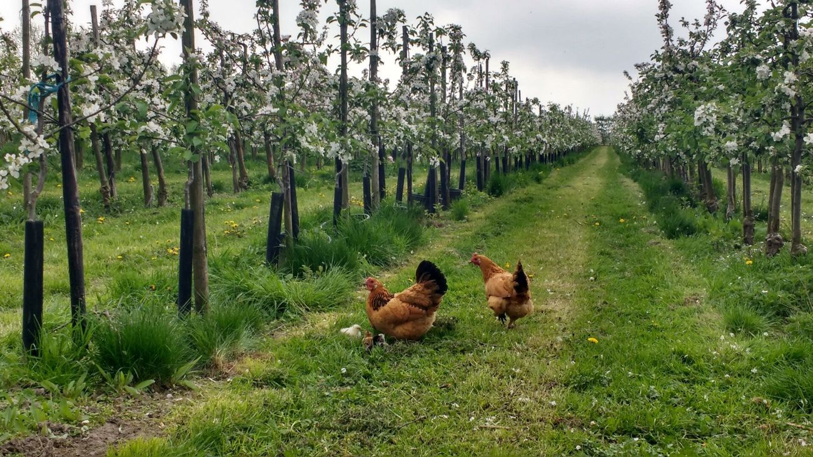
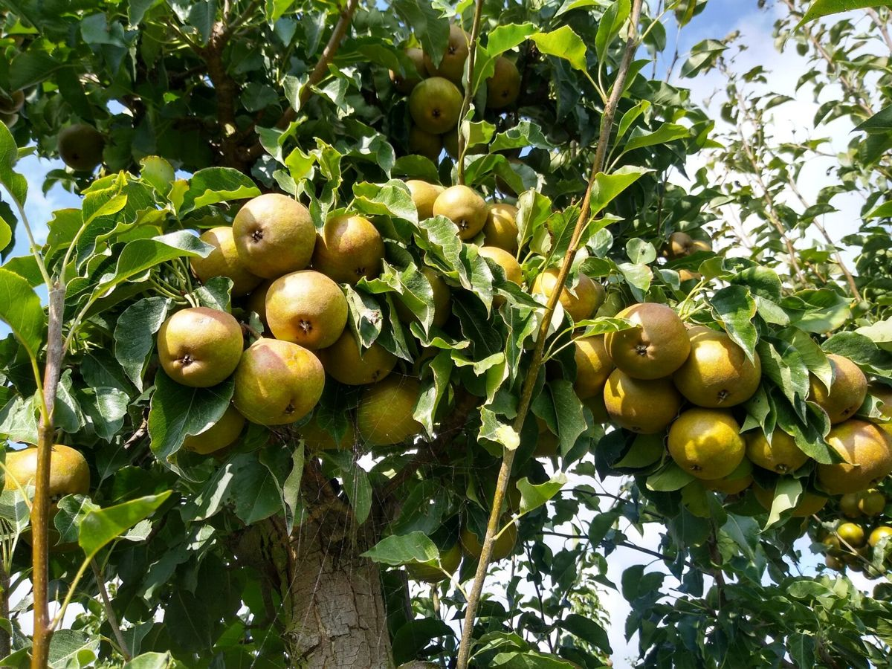
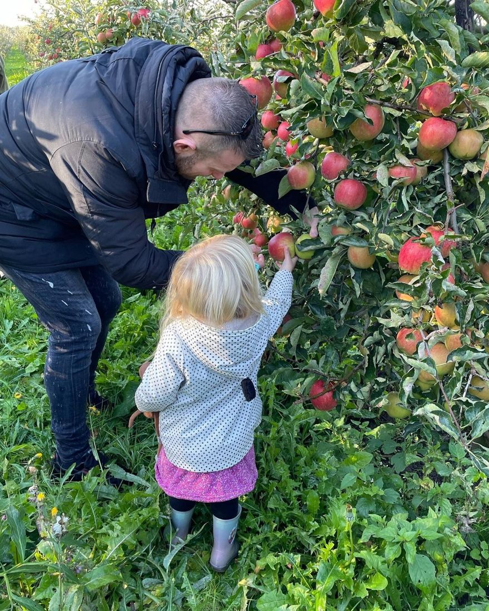
Kom tijdens onze openingstijden naar het winkeltje, dan leggen we het graag even uit. Vanaf eind augustus tot eind oktober pluk je zelf in onze boomgaard.
Veel variatie voor jong en oud, met mooi en 'slecht' weer. Gezellig samen zijn of juist wat actiever bezig zijn, het kan allemaal.

10 holes door onze boomgaard, met een stok met houten klomp.
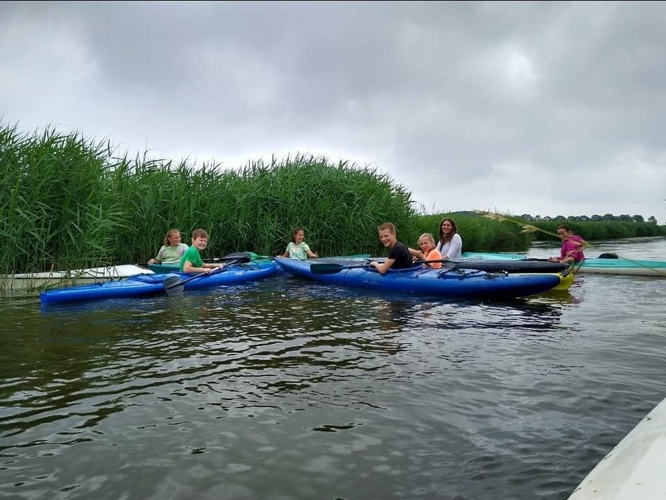
Kom op plekken in de Hoeksche Waard waar je per fiets of te voet nooit komt.
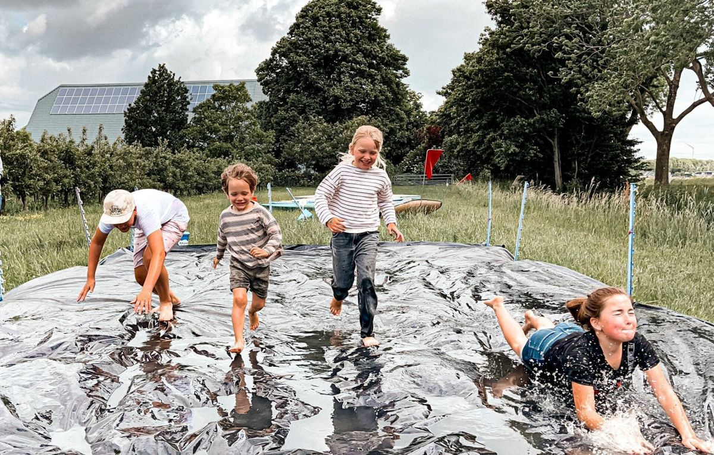
Ketelpakhangen, sprietlopen, klompenrace, waterhelmenrace en moddervoetbal.
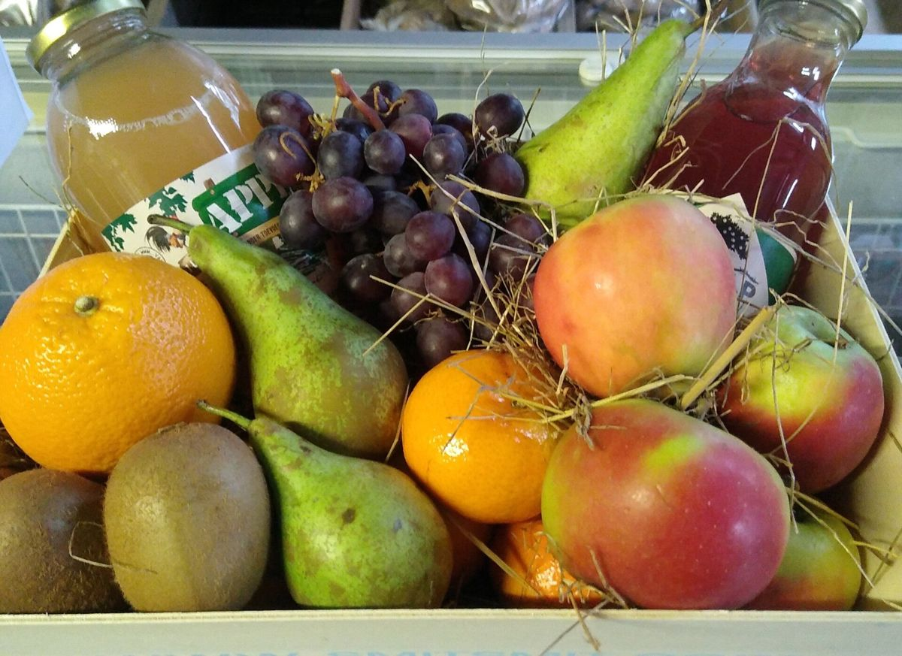
Pure, verse en lokale producten, wisselend per seizoen: groenten, fruit, aardappelen, zelfgemaakte jam en streekproducten. Ook voor een fruitmand of cadeaupakket ben je hier aan het juiste adres.
"Super leuk winkeltje. een feest om daar even te zijn met prachtige producten en een breed assortiment."Lammert Jan, via Lekkerder.nl
Bekijk wat er in de winkel ligt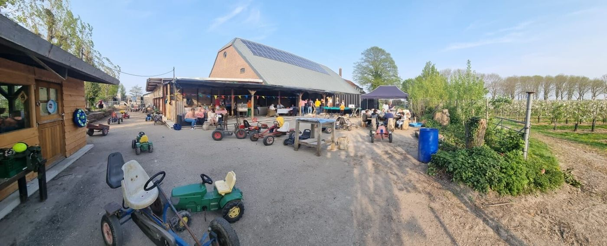
Bij Boerderij de Kikkershoek hebben we zoveel mogelijk gezonde, ambachtelijke en pure producten uit de Hoeksche Waard. Veel komt van ons eigen land, want we streven naar weinig voedselkilometers.
Op de boerderij aan de Maasweg in Mijnsheerenland vind je de winkel, de boomgaard en alle ruimte om buiten bezig te zijn. Heb je een vraag? Jeanet helpt je graag verder.
Een vraag, een bestelling of een uitje plannen? Stuur gerust een WhatsApp. Staan we in de winkel met klanten te praten, dan nemen we de telefoon niet altijd op, maar we nemen daarna contact met je op.
Op afspraak haal je je bestelling ook op een ander tijdstip op, ook op zondag.